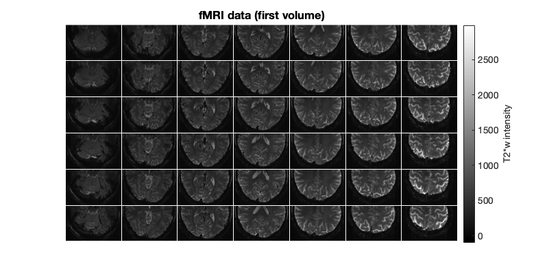
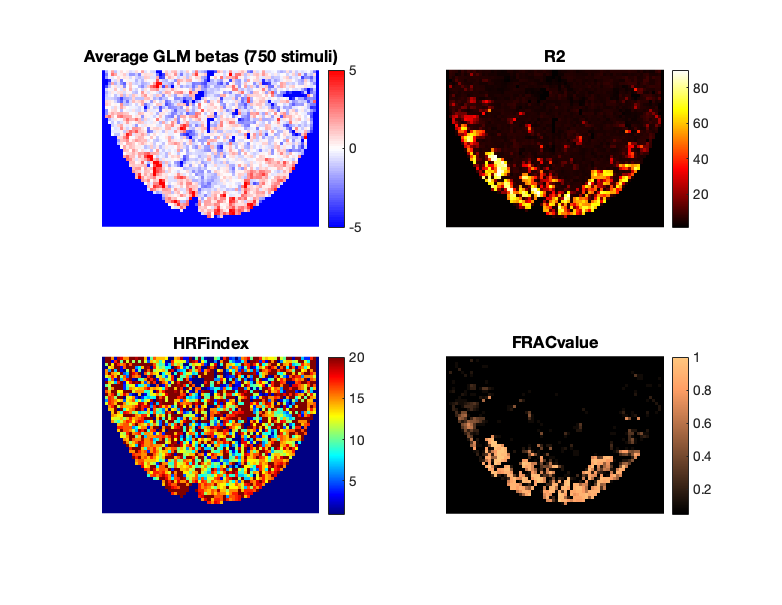

Example 2 Overview
GLMsingle is new tool that provides efficient, scalable, and accurate single-trial fMRI response estimates.
The purpose of this Example 2 notebook is to guide the user through basic calls to GLMsingle, using a representative, small-scale test dataset (in this case, 4 runs from an fMRI localizer session containing a block design, which was part of the Natural Scenes Dataset).
The goal is to examine the effect of GLMsingle on the reliability of fMRI response estimates to the different conditions used in the localizer set (e.g. faces, bodies, objects, scenes, words). By default, the tool implements a set of optimizations that improve upon generic GLM approaches by: (1) identifying an optimal hemodynamic response function (HRF) at each voxel, (2) deriving a set of useful GLM nuisance regressors via "GLMdenoise" and picking an optimal number to include in the final GLM, and (3) applying a custom amount of ridge regularization at each voxel using an efficient technique called "fracridge". The output of GLMsingle are GLM betas reflecting the estimated percent signal change in each voxel in response to each experimental stimulus or condition being modeled.
Beyond directly improving the reliability of neural responses to repeated conditions, these optimized techniques for signal estimation can have a range of desirable downstream effects such as: improving cross-subject representational similarity within and between datasets; improving the single-image decodability of evoked neural patterns via MVPA; and, decreasing the correlation in spatial patterns observed at neighboring timepoints in analysis of fMRI GLM outputs. See our video presentation at V-VSS 2020 for a summary of these phenomena as observed in recent massive-scale fMRI datasets (the Natural Scenes Dataset and BOLD5000): https://www.youtube.com/watch?v=yb3Nn7Han8o
Example 2 contains a full walkthrough of the process of loading an example dataset and design matrix, estimating neural responses using GLMsingle, estimating the reliability of responses at each voxel, and comparing those achieved via GLMsingle to those achieved using a baseline GLM. After loading and visualizing formatted fMRI time-series and their corresponding design matrices, we will describe the default behavior of GLMsingle and show how to modify hyperparameters if the user desires. Throughout the notebook we will highlight important metrics and outputs using figures, print statements, and comments.
Users encountering bugs, unexpected outputs, or other issues regarding GLMsingle shouldn't hesitate to raise an issue on GitHub: https://github.com/kendrickkay/GLMsingle/issues
Contents
- Add dependencies and download the data
- Data overview
- Call GLMestimatesingletrial with default parameters
- Summary of important outputs
- Plot a slice of brain with GLMsingle outputs
- Run a baseline GLM to compare with GLMsingle.
- Organize GLM outputs to enable calculation of voxel reliability
- Compute median split-half reliability for each GLM version
- Compare visual voxel reliabilities between beta versions in V1 and FFA ROIs
- Summary: median ROI voxel reliability for each beta version
Add dependencies and download the data
% We will assume that the current working directory is the directory that % contains this script. % Add path to GLMsingle addpath(genpath('../../matlab')); % You also need fracridge repository to run this code. For example, you % could do: % git clone https://github.com/nrdg/fracridge.git % and then do: % addpath('fracridge') % Start fresh clear clc close all % Name of directory to which outputs will be saved outputdir = 'example2outputs'; % Download files to data directory if ~exist('./data','dir') mkdir('data') end if ~exist('./data/nsdflocexampledataset.mat','file') % download data with curl system('curl -L --output ./data/nsdflocexampledataset.mat https://osf.io/g42tm/download') end load('./data/nsdflocexampledataset.mat') % Data comes from the NSD dataset (subj01, floc experiment, runs 1-4). % https://www.biorxiv.org/content/10.1101/2021.02.22.432340v1.full.pdf
Data overview
clc whos % data -> consists of several runs of 4D volume files (x,y,z,t) where % (t)ime is the 4th dimention. % visual.ROI -> maskfile defining different regions of primary visual % cortex, where (x,y,z) = integers 1 through 7 defines sets of voxels % belonging to different anatomical subsets (e.g. idx 1 corresponds to V1). % In this example, we will plot reliability values from voxels in V1. % floc.ROI -> maskfile containing manually-defined face-selective cortical % ROIs, where (x,y,z) = integers 1 through 3 defines sets of voxels % belonging to distinct ROIs (e.g. idx 1 corresponds to OFA, idx 2 to % FFA-1). In this example we will plot reliability values from voxels in % FFA. fprintf('There are %d runs in total.\n',length(design)); fprintf('The dimensions of the data for the first run are %s.\n',mat2str(size(data{1}))); fprintf('The stimulus duration is %.6f seconds.\n',stimdur); fprintf('The sampling rate (TR) is %.6f seconds.\n',tr);
Name Size Bytes Class Attributes data 1x4 662329024 cell design 1x4 4640 cell floc 1x1 1415408 struct outputdir 1x15 30 char stimdur 1x1 8 double tr 1x1 8 double visual 1x1 1415408 struct There are 4 runs in total. The dimensions of the data for the first run are [52 81 42 234]. The stimulus duration is 4.000000 seconds. The sampling rate (TR) is 1.333333 seconds.
figure(1);clf %Show example design matrix. for d = 1:length(design) subplot(2,2,d) imagesc(design{d}); colormap gray; drawnow xlabel('Conditions') ylabel('TRs') title(sprintf('Design matrix for run%i',d)) end

% design -> Each run has a corresponding design matrix where each column % describes a single condition (conditions are repeated across runs). Each % design matrix is binary with 1 specfing the time (TR) when the stimulus % is presented on the screen. % In each run of the NSD floc experiment there were images from 10 % categories presented in blocks of duration 4 sec each. Each category in % the localizer set was presented for 6 blocks per run, and each block % contained 8 stimuli shown for 0.5 sec each. The individual blocks are % coded as single events in the design matrices used for the present GLM % example. As such, there are 10 predictor columns/conditions per run, with % the onset TRs for each of the 6 presentations indicated in the design % matrix. Notice that the condition order is pseudo-randomized. Stimulus % details are described here: https://github.com/VPNL/fLoc
% Show an example slice of the first fMRI volume. figure(2);clf imagesc(makeimagestack(data{1}(:,:,:,1))); colormap(gray); axis equal tight; c=colorbar; title('fMRI data (first volume)'); set(gcf,'Position',[418 412 782 405]) axis off c.Label.String = 'T2*w intensity'; set(gca,'FontSize',15)
Call GLMestimatesingletrial with default parameters
% Outputs and figures will be stored in a folder (you can specify its name % as the 5th output to GLMestimatesingletrial). Model estimates can be also % saved to the 'results' variable which is the only output of % GLMestimatesingletrial. % Optional parameters below can be assigned to a structure, i.e., opt = % struct('wantlibrary',1,'wantglmdenoise',1); Options are the 6th input to % GLMestimatesingletrial. % There are many options that can be specified; here, we comment on the % main options that one might want to modify/set. Defaults for the options % are indicated below. % wantlibrary = 1 -> Fit HRF to each voxel wantglmdenoise = 1 -> Use % GLMdenoise wantfracridge = 1 -> Use ridge regression to improve beta % estimates chunknum = 50000 -> is the number of voxels that we will % process at the % same time. For setups with lower memory, you may need to decrease this % number. % wantmemoryoutputs is a logical vector [A B C D] indicating which of the % four model types to return in the output <results>. The user must be % careful with this, as large datasets can require a lot of RAM. If you % do not request the various model types, they will be cleared from % memory (but still potentially saved to disk). Default: [0 0 0 1] % which means return only the final type-D model. % wantfileoutputs is a logical vector [A B C D] indicating which of the % four model types to save to disk (assuming that they are computed). A % = 0/1 for saving the results of the ONOFF model B = 0/1 for saving % the results of the FITHRF model C = 0/1 for saving the results of the % FITHRF_GLMdenoise model D = 0/1 for saving the results of the % FITHRF_GLMdenoise_RR model Default: [1 1 1 1] which means save all % computed results to disk. % numpcstotry (optional) is a non-negative integer indicating the maximum % number of PCs to enter into the model. Default: 10. % fracs (optional) is a vector of fractions that are greater than 0 % and less than or equal to 1. We automatically sort in descending % order and ensure the fractions are unique. These fractions indicate % the regularization levels to evaluate using fractional ridge % regression (fracridge) and cross-validation. Default: % fliplr(.05:.05:1). A special case is when <fracs> is specified as a % single scalar value. In this case, cross-validation is NOT performed % for the type-D model, and we instead blindly use the supplied % fractional value for the type-D model. % For the purpose of this example we will keep all outputs in the memory. opt = struct('wantmemoryoutputs',[1 1 1 1]); % This example saves output .mat files to the folder % "example2outputs/GLMsingle". If these outputs don't already exist, we % will perform the time-consuming call to GLMestimatesingletrial.m; % otherwise, we will just load from disk. if ~exist([outputdir '/GLMsingle'],'dir') [results] = GLMestimatesingletrial(design,data,stimdur,tr,[outputdir '/GLMsingle'],opt); % We assign outputs of GLMestimatesingletrial to "models" structure. % Note that results{1} contains GLM estimates from an ONOFF model, % where all images are treated as the same condition. These estimates % could be potentially used to find cortical areas that respond to % visual stimuli. We want to compare beta weights between conditions % therefore we are not going to store the ONOFF GLM results. clear models; models.FIT_HRF = results{2}; models.FIT_HRF_GLMdenoise = results{3}; models.FIT_HRF_GLMdenoise_RR = results{4}; else % Load existing file outputs if they exist results = load([outputdir '/GLMsingle/TYPEB_FITHRF.mat']); models.FIT_HRF = results; results = load([outputdir '/GLMsingle/TYPEC_FITHRF_GLMDENOISE.mat']); models.FIT_HRF_GLMdenoise = results; results = load([outputdir '/GLMsingle/TYPED_FITHRF_GLMDENOISE_RR.mat']); models.FIT_HRF_GLMdenoise_RR = results; end
Summary of important outputs
% The outputs of GLMestimatesingletrial.m are formally documented in its % header. Here, we highlight a few of the more important outputs: % % R2 -> is model accuracy expressed in terms of R^2 (percentage). % % modelmd -> is the full set of single-trial beta weights (X x Y x Z x % TRIALS). Beta weights are arranged in chronological order. % % HRFindex -> is the 1-index of the best fit HRF. HRFs can be recovered % with getcanonicalHRFlibrary(stimdur,tr) % % FRACvalue -> is the fractional ridge regression regularization level % chosen for each voxel. Values closer to 1 mean less regularization.
Plot a slice of brain with GLMsingle outputs
% We are going to plot several outputs from the FIT_HRF_GLMdenoise_RR GLM, % which contains the full set of GLMsingle optimizations. slice_V1 = 20; % slice containing many early visual cortex voxels % we will plot betas, R2, optimal HRF indices, and the voxel frac values val2plot = {'modelmd';'R2';'HRFindex';'FRACvalue'}; cmaps = {cmapsign2;hot;jet;copper}; % Mask out voxels that are outside the brain brainmask = models.FIT_HRF_GLMdenoise_RR.meanvol(:,5:end-5,slice_V1) > 250; figure(3);clf for v = 1 : length(val2plot) f=subplot(2,2,v); % Set non-brain voxels to nan to ease visualization plotdata = models.FIT_HRF_GLMdenoise_RR.(val2plot{v})(:,5:end-5,slice_V1); plotdata(~brainmask) = nan; if contains('modelmd',val2plot{v}) imagesc(nanmean(plotdata,4),[-5 5]); axis off image; title('Average GLM betas (750 stimuli)') else imagesc(plotdata); axis off image; title(val2plot{v}) end colormap(f,cmaps{v}) colorbar set(gca,'FontSize',15) end set(gcf,'Position',[418 412 782 605])
Run a baseline GLM to compare with GLMsingle.
% Additionally, for comparison purposes we are going to run a standard GLM % without HRF fitting, GLMdenoise, or ridge regression regularization. We % will change the default settings by using the "opt" structure. opt.wantlibrary = 0; % switch off HRF fitting opt.wantglmdenoise = 0; % switch off GLMdenoise opt.wantfracridge = 0; % switch off ridge regression opt.wantfileoutputs = [0 1 0 0]; opt.wantmemoryoutputs = [0 1 0 0]; % If these outputs don't already exist, we will perform the call to % GLMestimatesingletrial.m; otherwise, we will just load from disk. if ~exist([outputdir '/GLMbaseline'],'dir') [ASSUME_HRF] = GLMestimatesingletrial(design,data,stimdur,tr,[outputdir '/GLMbaseline'],opt); models.ASSUME_HRF = ASSUME_HRF{2}; else % Note that even though we are loading TYPEB_FITHRF betas, HRF fitting % has been turned off and this struct field will thus contain the % outputs of a GLM fit using the canonical HRF. results = load([outputdir '/GLMbaseline/TYPEB_FITHRF.mat']); models.ASSUME_HRF = results; end % We assign outputs from GLMestimatesingletrial to "models" structure. % Again, results{1} contains GLM estimates from an ONOFF model so we are % not going to extract it.
% Now, "models" variable holds solutions for 4 GLM models
disp(fieldnames(models))
'FIT_HRF'
'FIT_HRF_GLMdenoise'
'FIT_HRF_GLMdenoise_RR'
'ASSUME_HRF'
Organize GLM outputs to enable calculation of voxel reliability
% To compare the results of different GLMs we are going to calculate the % voxel-wise split-half reliablity for each model. Reliability values % reflect a correlation between beta weights for repeated presentations of % the same conditions. In short, we are going to check how % reliable/reproducible are the single trial responses to repeated % conditions estimated with each GLM type. % This NSD floc scan session has 6 repetitions of each condition per run. % In the code below, we are attempting to locate the indices in the beta % weight GLMsingle outputs modelmd(x,y,z,trials) that correspond to % repeated conditions. % Consolidate design matrices designALL = cat(1,design{:}); % Construct a vector containing 1-indexed condition numbers in % chronological order. corder = []; for p=1:size(designALL,1) if any(designALL(p,:)) corder = [corder find(designALL(p,:))]; end end
% let's take a look at the first few entries corder(1:3) % Note that [10 8 7] means that the first stimulus block involved % presentation of the 10th condition, the second stimulus block involved % presentation of the 8th condition, and so on.
ans =
10 8 7
% In order to compute split-half reliability, we have to do some indexing. % We want to find all repetitions of the same condition. For example we can % look up when during the 4 blocks image 1 was repeated. Each condition % should be repeated exactly 24 times. fprintf('Condition 1 was repeated %i times across 4 runs, with GLMsingle betas at the following indices:\n',length(find(corder==1))); find(corder==1) % Now, for each voxel we are going to correlate beta weights describing the % response to averaged even presentations of the 10 conditions with beta % weights describing the responses from the averaged odd repetitions of the % same conditions, over time. With 10 conditions in the localizer set, the % split-half correlation for each voxel will thus reflect the relationship % between two vectors with 10 beta weights each.
Condition 1 was repeated 24 times across 4 runs, with GLMsingle betas at the following indices:
ans =
Columns 1 through 13
8 13 17 20 34 57 64 76 85 97 106 114 126
Columns 14 through 24
137 142 151 171 174 195 202 204 214 227 237
Compute median split-half reliability for each GLM version
% To calculate the split-half reliability we are going to average the odd % and even beta weights extracted from the same condition and calculate the % correlation coefficent between these values. We do this for each voxel % inside the primary visual cortex and face-selective cortical ROIs. % We first arrange models from least to most sophisticated (for % visualization purposes) model_names = fieldnames(models); model_names = model_names([4 1 2 3]); % Create output variable for reliability values vox_reliabilities = cell(1,length(models)); % For each GLM... for m = 1 : length(model_names) % Get the GLM betas modelmd = models.(model_names{m}).modelmd; dims = size(modelmd); Xdim = dims(1); Ydim = dims(2); Zdim = dims(3); cond = size(design{1},2); reps = dims(4)/cond; % Create an empty variable for storing betas grouped together by % condition (X, Y, Z, nReps, nConditions) betas = nan(Xdim,Ydim,Zdim,reps,cond); % Populate repetition beta variable by iterating through conditions for c = 1 : length(unique(corder)) indx = find(corder == c); betas(:,:,:,:,c) = modelmd(:,:,:,indx); end % Output variable for reliability values vox_reliability = NaN(Xdim, Ydim, Zdim); % Loop through voxels in the fMRI volume for i = 1:Xdim for j = 1:Ydim for k = 1:Zdim % Calculate the reliability only for voxels within the % EarlyVis and FFA ROIs, for the sake of efficiency if visual.ROI(i,j,k) > 0 || floc.ROI(i,j,k) > 0 vox_data = squeeze(betas(i,j,k,:,:)); even_data = nanmean(vox_data(1:2:end,:)); odd_data = nanmean(vox_data(2:2:end,:)); % Reliability is the split-half correlation between odd % and even presentations vox_reliability(i,j,k) = corr(even_data', odd_data'); end end end end % Store reliablity for each model vox_reliabilities{m} = vox_reliability; end
Compare visual voxel reliabilities between beta versions in V1 and FFA ROIs
figure(5);clf % For each GLM type we will calculate median reliability for voxels within % the visual ROIs and draw a bar plot for FFA and V1. slice_V1 = 10; % good slice for viewing V1 slice_ffa = 3; % good slice for viewing FFA for s = 1 : 5 subplot(2,5,s) underlay = data{1}(:,:,slice_V1,1); overlay = visual.ROI(:,:,slice_V1)==1; % index 1 corresponds to V1 in this mask variable underlay_im = cmaplookup(underlay,min(underlay(:)),max(underlay(:)),[],gray(256)); overlay_im = cmaplookup(overlay,-0.5,0.5,[],[0 0 1]); mask = visual.ROI(:,:,slice_V1)==1; hold on imagesc(imrotate(underlay_im,180)); imagesc(imrotate(overlay_im,180), 'AlphaData', imrotate(mask,180)); title(sprintf('V1 voxels, slice = %i',slice_V1)) slice_V1 = slice_V1 + 1; axis image axis off set(gca,'FontSize',14) subplot(2,5,s+5) underlay = data{1}(:,:,slice_ffa,1); overlay = floc.ROI(:,:,slice_ffa)==2; % index 2 corresponds to FFA in this mask variable underlay_im = cmaplookup(underlay,min(underlay(:)),max(underlay(:)),[],gray(256)); overlay_im = cmaplookup(overlay,-0.5,0.5,[],round([237 102 31]/255,2)); mask = floc.ROI(:,:,slice_ffa)==2; hold on imagesc(imrotate(underlay_im,180)); imagesc(imrotate(overlay_im,180), 'AlphaData', imrotate(mask,180)); title(sprintf('FFA voxels, slice = %i',slice_ffa)) slice_ffa = slice_ffa + 1; axis image axis off set(gca,'FontSize',14) end set(gcf,'Position',[218 212 1400 500])

Summary: median ROI voxel reliability for each beta version
% To perform a comparison between all GLM versions available in our visual % ROIs, we will simply loop through the beta versions, isolate the voxels % of interest, compute the median split-half correlation value within each % ROI, and plot using a bar graph. figure(6) cmap = [0.2314 0.6039 0.6980 0.8615 0.7890 0.2457 0.8824 0.6863 0 0.9490 0.1020 0]; % For each GLM type we calculate median reliability for voxels within V1 % and FFA plot_data = zeros(length(vox_reliabilities),2); for m = 1 : 4 vox_reliability = vox_reliabilities{m}; % floc.ROI==2 points to FFA voxels, visual.ROI==1 points to V1 voxels plot_data(m,:) = [nanmedian(vox_reliability(floc.ROI==2)) nanmedian(vox_reliability(visual.ROI==1))]; end bar(plot_data) ylabel('Median reliability') set(gca,'Fontsize',12) set(gca,'TickLabelInterpreter','none') xtickangle(0) legend({'FFA';'V1'},'Interpreter','None','Location','NorthWest') set(gcf,'Position',[418 412 1000 605]) title('Median voxel split-half reliability of GLM models') xticklabels(model_names') set(gca,'FontSize',14) % Notice that there is systematic increase in reliability moving from the % first to the second to the third to the final fourth version of the GLM % results, within both the early visual and face-selective ROIs. These % increases reflect, respectively, the addition of HRF fitting, the % derivation and use of data-driven nuisance regressors, and the use of % ridge regression as a way to regularize the instability of closely spaced % experimental trials. Depending on one's experimental goals, it is % possible with setting of option flags to activate a subset of these % analysis features. % % Also, keep in mind that in the above figure, we are simply showing the % median as a metric of the central tendency (you may want to peruse % individual voxels in scatter plots, for example). % Note also that median reliability is consistently higher in the FFA ROI % than in the V1 ROI in this analysis of localizer data. Importantly, this % does not imply that V1 data are inherently noisy or unreliable across the % NSD dataset (e.g. in the NSD core experiment). Here we are analyzing GLM % outputs from the localizer dataset, which was designed to identify neural % ROIs whose voxel tuning profiles vary meaningfully across a small, % curated set of high-level stimulus categories. As such, we would expect % the FFA voxels to have relatively more well-defined tuning curves, with % more substantial variability in GLM betas between the localizer % categories, than the V1 voxels, whose tuning is determined by lower-level % image features that do not necessarily vary in systematic ways between % the localizer categories. For these reasons, one might expect that % split-half correlations would be somewhat lower in the V1 voxels using % our particular metric of reliability (odd-even correlation) in this % dataset. Different metrics of reliability may generate different patterns % of results when comparing these two ROIs, and we would also expect % results to vary depending on the stimulus set.

% We now plot the improvement of reliability when comparing % FIT_HRF_GLMDENOISE_RR with ASSUME_HRF, with higher positive values % reflecting greater benefit from applying GLMsingle. figure(7) % Comparison is the final output (FIT_HRF_GLMDENOISE_RR) vs. the baseline % GLM (ASSUME_HRF) vox_improvement = vox_reliabilities{4} - vox_reliabilities{1}; slice = 4; ROI = visual.ROI == 1 | floc.ROI == 2; for s = 1:15 subplot(3,5,s) underlay = data{1}(:,5:end-5,slice,1); overlay = vox_improvement(:,5:end-5,slice); underlay_im = cmaplookup(underlay,min(underlay(:)),max(underlay(:)),[],gray(256)); overlay_im = cmaplookup(overlay,-0.3,0.3,[],cmapsign2); mask = ROI(:,5:end-5,slice)==1; hold on imagesc(imrotate(underlay_im,180)); imagesc(imrotate(overlay_im,180), 'AlphaData', imrotate(mask,180)); title(['median ROI \Delta{\itr} in slice:' newline '+' num2str(nanmedian(overlay(:)),3)]) slice = slice + 1; axis image colormap(cmapsign2) c = colorbar; c.TickLabels = {'-0.3';'0';'0.3'}; xticks([]) yticks([]) set(gca,'FontSize',14) end set(gcf,'Position',[100 100 1600 700])